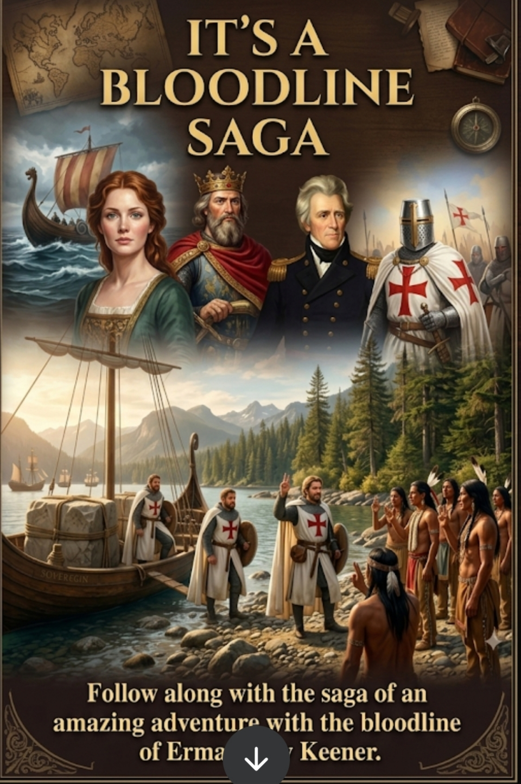
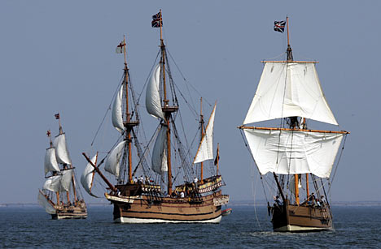
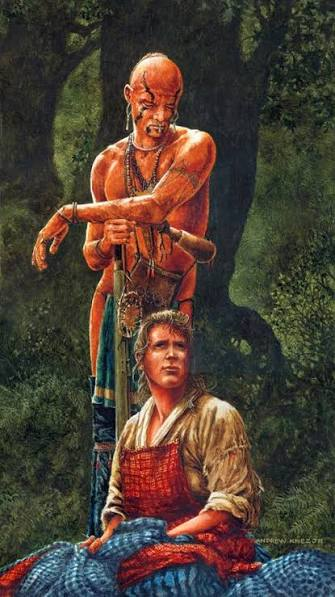

Follow along with the saga of an amazing adventure and save, follow the bloodline.
ENTER THE SAGA
THE SOVEREIGN ARCHIVE LIBRARY
CONSULT THE ENCYCLOPEDIA

GLOBAL MARITIME CHRONICLE: 1135–1750
VANCE ENCYCLOPEDIA & LINEAGE
CHANEY ENCYCLOPEDIA & LINEAGE
PERRY ENCYCLOPEDIA & LINEAGE
CLAY ENCYCLOPEDIA & LINEAGE

WILLIAMSON ENCYCLOPEDIA & LINEAGE
THE STORY OF JENNY WILEY
THE LAST OF THE MOHICANS
CLOSE RECORD